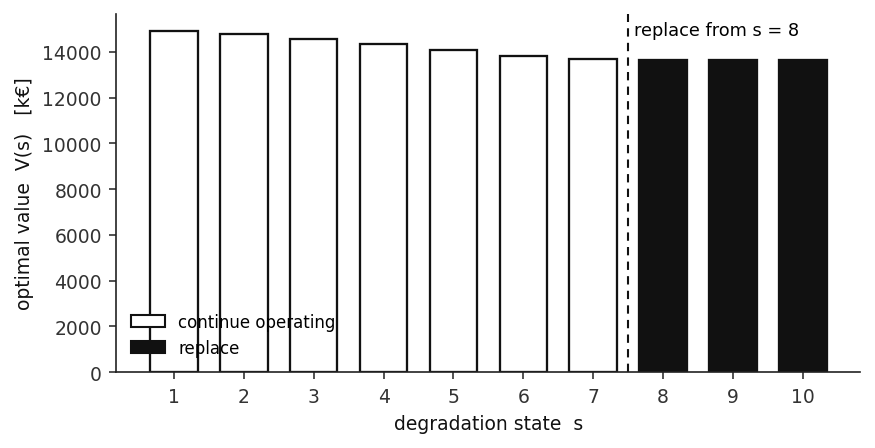
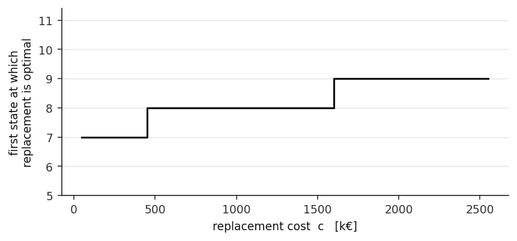

Stochastic Machine Replacement Policy
A cheese production line decides at the end of each cycle whether to keep a deteriorating machine or replace it. Replacing costs money and a full cycle of output. Keeping costs productivity that never returns.
The problem
A machine occupies one of ten efficiency states, where a higher index means heavier degradation. Left alone, it moves one state worse with probability p and two states worse with probability 1 − p, absorbing at the worst state.
Output follows y(s) = 5 + s − 0.15s², which rises briefly, peaks around the third state, then falls to zero at the tenth. Each ton contributes 150 thousand euros. Replacement returns the machine to state one at a cost of 500 thousand euros and forfeits that cycle's production entirely.
The horizon is infinite and the question is a policy, not a schedule: for every state, keep or replace.
Why it matters
Replacement decisions are usually made on a fixed calendar or on a single condition threshold picked by judgement. Neither accounts for the fact that the value of waiting depends on how fast degradation compounds and on how much the future is worth relative to the present.
Framing it as a Markov decision process makes the threshold an output rather than an assumption, and makes it possible to ask how sensitive that threshold is to the numbers that are least well known.
Model
The Bellman optimality equation gives, for each state, the maximum of continuing and replacing. Continuing earns this cycle's revenue and moves stochastically to a worse state. Replacing pays the cost and restarts from state one. Value iteration is applied until the sup-norm change falls below tolerance.
Scale and implementation
Ten states, two actions, infinite horizon, discounted. Small enough to solve exactly and therefore ideal for studying how the optimal policy responds to its parameters rather than to solver noise.
Results


Value iteration converged in 533 sweeps to a control limit policy: keep the machine in states one through seven, replace from state eight onward. A control limit policy is the structural result you hope for here, because it is the kind of rule a plant can actually operate.
A dual linear programme over discounted occupancy measures then priced the marginal value of reliability at approximately 0.65 k€ per one percent increase in output. That converts the policy into a number a maintenance budget can be argued against.
The threshold moves exactly as economic reasoning predicts. Cheaper replacement pulls it earlier, to state seven. Expensive replacement pushes it later, to state nine. A myopic planner who discounts the future heavily waits until state ten, when production has already fallen to zero, because they never value the restored output enough to pay for it now.
Summary
A small model that pays for itself in interpretation. The value of the exercise is not the threshold at one parameter setting but the map from economics to policy: how much cheaper replacement must become before it is worth acting a cycle earlier.
Source materials
- Solution notebook — value iteration and dual occupancy LP
- Problem statement — assignment brief, Prof. Yiping Fang
Solved in Python. The figures above are produced by re-running the value iteration at the project parameters.